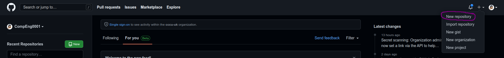
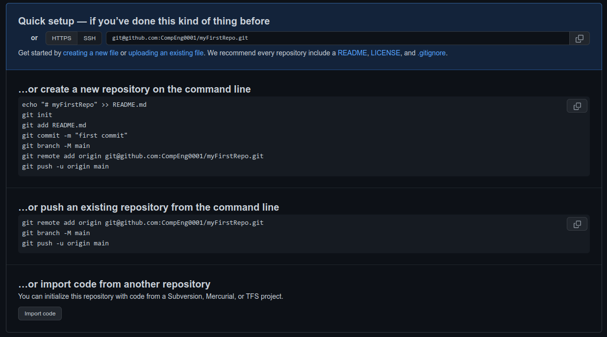
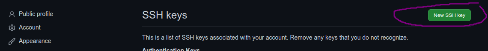
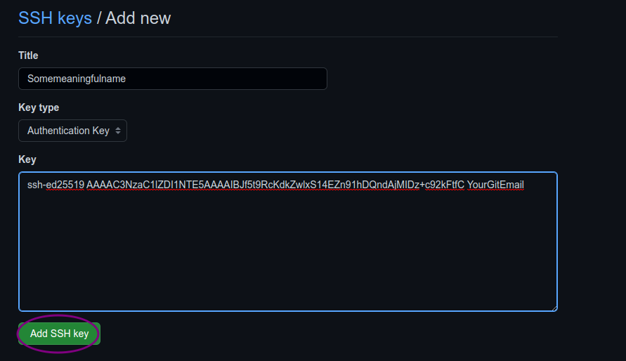
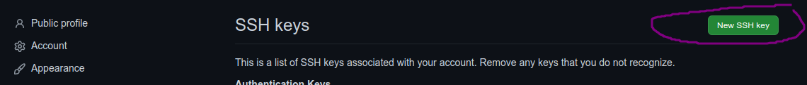
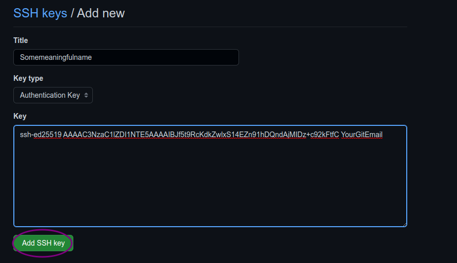
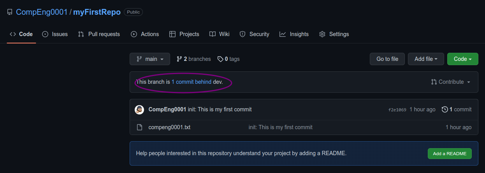
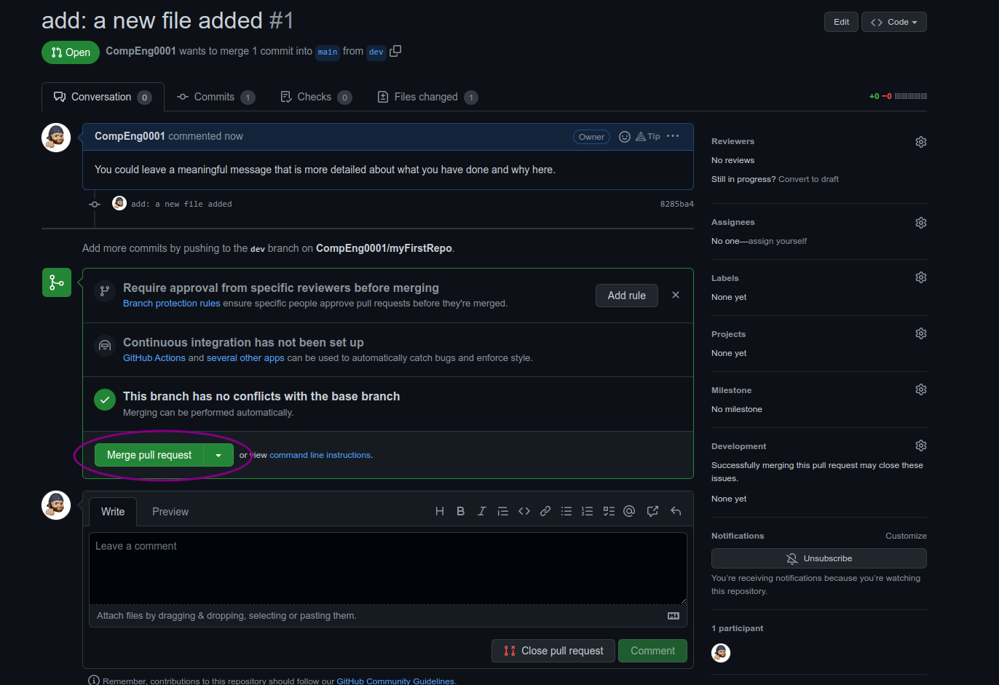
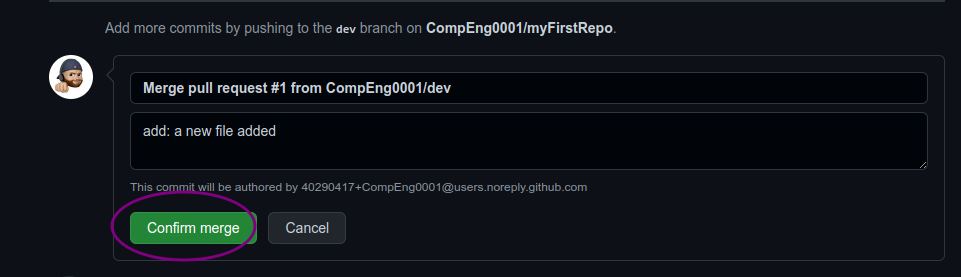
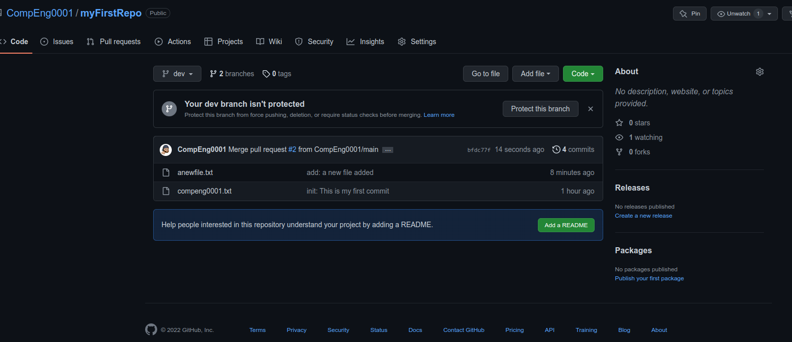

My First Repository
Introduction
-
The first two things you'll want to do are install
gitand create a free GitHub account.-
If on University machines, use the Software Center to install
git -
If your machine, follow the instructions https://git-scm.com/book/en/v2/Getting-Started-Installing-Git to install
git(if it's not already installed). -
Once you've done that, create a GitHub account https://github.com/join, you should use your university email account, but choose a different password
-
-
Note that for this tutorial we will be using
giton the command line only. While there are some great git GUIs (graphical user interfaces), It's easier to learn git using git-specific commands first and then to try out a git GUI once you're more comfortable with the command. -
95% of other online
gitresources and discussions will also be for the command-line interface.
-
Git and GitHub are not the same thing. Git is an open-source, version control tool created in 2005 by developers working on the Linux operating system; GitHub is a company founded in 2008 that makes tools which integrate with
git. -
You do not need GitHub to use
git, but you cannot use GitHub without usinggit. -
There are many other alternatives to GitHub, such as GitLab, BitBucket, and “host-your-own” solutions such as gogs and gittea. All of these are referred to in git-speak as “remotes”, and all are completely optional.
-
You do not need to use a remote to use
git, but it will make sharing your code with others easier.
Step 0: Git global config
-
Follow these instructions in the command line:
git config --global user.name YOUR_GITHUB_USER_NAME git config --global user.email YOUR_GITHUB_USER_NAME_EMAIL
Step 1: Create a local git repository
When creating a new project on your local machine using git, you'll first create a new repository (or often, 'repo', for short).
To use git we'll be using the terminal. If you don't have much experience with the terminal and basic commands, check out this tutorial (If you don’t want/ need a short history lesson, skip to step three.)
-
To begin, open up a terminal and move to where you want to place the project on your local machine using the cd (change directory) command. For example, if you have a 'projects' folder on your desktop, you'd do something like:
❯ cd Documents/ ~/Documents ❯ mkdir myfirstrepository ~/Documents ❯ cd myfirstrepository ~/Documents/myfirstrepository -
To initialize a git repository in the root of the folder, run the
git initcommand:~/Documents/myfirstrepository ❯ git init hint: Using 'master' as the name for the initial branch. This default branch name hint: is subject to change. To configure the initial branch name to use in all hint: of your new repositories, which will suppress this warning, call: hint: hint: git config --global init.defaultBranch <name> hint: hint: Names commonly chosen instead of 'master' are 'main', 'trunk' and hint: 'development'. The just-created branch can be renamed via this command: hint: hint: git branch -m <name> Initialized empty Git repository in /path/to/myfirstrepository/.git/ -
Regardless of the output above, rename the current branch with:
Step 2: Add a new file to the repo
-
Go ahead and add a new file to the project, using any text editor you like or running a touch command.
touch compeng0001.txtjust creates and saves a blank file namedcompeng0001.txt. -
Once you've added or modified files in a folder containing a git repo, git will notice that the file exists inside the repo. But, git won't track the file unless you explicitly tell it to. Git only saves/manages changes to files that it tracks, so we’ll need to send a command to confirm that yes, we want git to track our new file.
-
After creating the new file, you can use the
git statuscommand to see which files git knows exist. -
What this basically says is, "Hey, we noticed you created a new file called compeng0001.txt, but unless you use the
git addcommand we aren't going to do anything with it."-
One of the most confusing parts when you're first learning git is the concept of the staging environment and how it relates to a
commit. -
A [commit](https://docs.github.com/en/free-pro-team@latest/github/getting-started-with-github/github-glossary#:~:text=the%20repository%20owner.-,commit,- o%20made%20them%20and%20when.) is a record of what changes you have made since the last time you made a commit. Essentially, you make changes to your repo (for example, - ding a file or modifying one) and then tell git to put those changes into a
commit. -
Commits make up the essence of your project and allow you to jump to the state of a project at any other
commit. -
So, how do you tell git which files to put into a
commit? This is where the [staging environment](https://git-scm.com/book/en/v2/- t-Basics-Recording-Changes-to-the-Repository) or index come in. As seen in Step 2, when you make changes to your repo, git notices that a file has changed but won't do - ything with it (like adding it in a commit). -
To add a file to a commit, you first need to add it to the staging environment. To do this, you can use the
git add <filename]>- mmand (see Step 3 below). -
Once you've used the git add command to add all the files you want to the staging environment, you can then tell git to package them into a commit using the
git commitcommand. -
Note: The staging environment, also called 'staging', is the new preferred term for this, but you can also see it referred to as the 'index'.
-
Step 3: Add a file to the staging environment
-
Add a file to the staging environment using the
git addcommand. -
If you rerun the
git statuscommand, you'll see that git has added the file to the staging environment (notice the "Changes to be committed" line). -
To reiterate, the file has not yet been added to a commit, but it's about to b. However, first we need to make sure we have some creditentials for the commit to log who and when.
-
First set your username:
-
Next set your email:
Step 4: Create a commit
-
It's time to create your first commit!
-
Run the command
git commit -m "Your message about the commit"myfirstrepository on main ❯ git commit -m "init: This is my first commit" [main (root-commit) f2e1069] init: This is my first commit 1 file changed, 0 insertions(+), 0 deletions(-) create mode 100644 compeng0001.txtThe message at the end of the commit should be something related to what the commit contains:
-
maybe it's a new feature, maybe it's a bug fix, maybe it's just fixing a typo.
-
Don't put a message like "asdfadsf" or "foobar". That makes the other people who see your commit sad. Very, very, sad.
-
Commits live forever in a repository (technically you can delete them if you really, really need to but it’s messy), so if you leave a clear explanation of your changes it can be extremely helpful for future programmers (perhaps future you!) who are trying to figure out why some change was made years later.
-
Step 5: Create a new branch
Now that you've made a new commit, let's try something a little more advanced.
Say you want to make a new feature but are worried about making changes to the main project while developing the feature. This is where git branches come in.
Branches allow you to move back and forth between 'states' of a project. Official git docs describe branches this way: ‘A branch in Git is simply a lightweight movable pointer to one of these commits.’ For instance, if you want to add a new page to your website you can create a new branch just for that page without affecting the main part of the project. Once you're done with the page, you can merge your changes from your branch into the primary branch. When you create a new branch, Git keeps track of which commit your branch 'branched' off of, so it knows the history behind all the files.
Let's say you are on the primary branch and want to create a new branch to develop your web page. Here's what you'll do:
-
Run
git checkout -b <my branch name>. This command will automatically create a new branch and then 'check you out' on it, meaning git will move you to that branch, off of the primary branch.After running the above command, you can use the
git branchcommand to confirm that your branch was created: -
The branch name with the asterisk next to it indicates which branch you're on at that given time.
-
By default, every git repository’s first branch is named
master(and is typically used as the primary branch in the project). As part of the tech industry’s general anti-racism work, some groups have begun to use alternate names for the default branch (we are using “primary” in this tutorial, for example). In other documentation and discussions, you may see “master”, or other terms, used to refer to the primary branch. Regardless of the name, just keep in mind that nearly every repository has a primary branch that can be thought of as the official version of the repository. If it’s a website, then the primary branch is the version that users see. If it’s an application, then the primary branch is the version that users download. This isn’t technically necessary (git doesn’t treat any branches differently from other branches), but it’s how git is traditionally used in a project. -
If you are curious about the decision to use different default branch names, GitHub has an explanation of their change here: https://github.com/github/renaming
-
Now, if you switch back to the primary branch and make some more commits, your new branch won't see any of those changes until you
mergethose changes onto your new branch.
-
Step 6: Create a new repository on GitHub
If you only want to keep track of your code locally, you don't need to use GitHub. But if you want to work with a team, you can use GitHub to collaboratively modify the project's code.
-
To create a new repo on GitHub, log in and go to the GitHub home page. You can find the “New repository” option under the “+” sign next to your profile picture, in the top right corner of the navbar:

-
After clicking the button, GitHub will ask you to name your repo and provide a brief description:

-
You will see your new repo has been created with some useful instructions on creating and pushing a repo.

-
Go back to the terminal.
Step 7: Security and authentication
You need to create an ssh key to push and pull to your online storage/repo before we try to sync with the cloud.
-
You need to get your public key you have generated and add to GitHub.

myfirstrepository on dev ❯ cat ~/.ssh/id_ed25519.pub ssh-ed25519 AAAAC3NzaC1lZDI1NTE5AAAAIBJf5t9RcKdkZwlxS14EZn91hDQndAjMIDz+c92kFtfC YourGitEmail -
The copy the output from
ssh-ed25519 ... YourGitEmailand follow the screenshots below.
 


 -
Once completed, go back to the terminal and lets check for a connection:

-
You may see a similar output below, ensure you write
yes...The authenticity of host 'github.com (140.82.121.4)' can't be established. ED25519 key fingerprint is SHA256:+DiY3wvvV6TuJJhbpZisF/zLDA0zPMSvHdkr4UvCOqU. This key is not known by any other names Are you sure you want to continue connecting (yes/no/[fingerprint])? yes -
Now that is done, we can actually push our work to the cloud.
Step 8: Push a branch to GitHub
Now we'll push the commit in your branch to your new GitHub repo. This allows other people to see the changes you've made. If they're approved by the repository's owner, the changes can then be merged into the primary branch.
-
First create a reference to the online repo.
myfirstrepository on dev ❯ git remote add origin git@github.com:CompEng0001/myFirstRepo.git -
To push changes onto a new branch on GitHub, you'll want to run
git push origin yourbranchname. GitHub will automatically create the branch for you on the remote repository:myfirstrepository on dev ❯ git push origin dev Enumerating objects: 3, done. Counting objects: 100% (3/3), done. Writing objects: 100% (3/3), 236 bytes | 236.00 KiB/s, done. Total 3 (delta 0), reused 0 (delta 0), pack-reused 0 To github.com:CompEng0001/myFirstRepo.git * [new branch] dev -> dev -
Now go back to the main branch and lets make sure that is pushed to the cloud aswell.
-
...then:
myfirstrepository on main ❯ git push --set-upstream origin main Total 0 (delta 0), reused 0 (delta 0), pack-reused 0 remote: remote: Create a pull request for 'main' on GitHub by visiting: remote: https://github.com/CompEng0001/myFirstRepo/pull/new/main remote: To github.com:CompEng0001/myFirstRepo.git * [new branch] main -> main branch 'main' set up to track 'origin/main'.You might be wondering what that "origin" word means in the command above. What happens is that when you clone a remote repository to your local machine, git creates an alias for you. In nearly all cases this alias is called "origin." It's essentially shorthand for the remote repository's URL. So, to push your changes to the remote repository, you could've used either the command:
git push git@github.com:git/git.git yourbranchnameorgit push origin yourbranchname -
If you refresh the GitHub page, you'll see note saying a branch with your name has just been pushed into the repository. You can also click the 'branches' link to see your branch listed there.
-
Now lets make a change locally in the
devbranch.myfirstrepository on dev [+] ❯ git commit -m "add: a new file added" [dev 8285ba4] add: a new file added 1 file changed, 0 insertions(+), 0 deletions(-) create mode 100644 anewfile.txtmyfirstrepository on dev ❯ git push fatal: The current branch dev has no upstream branch. To push the current branch and set the remote as upstream, use git push --set-upstream origin devmyfirstrepository on dev ❯ git push --set-upstream origin dev Enumerating objects: 3, done. Counting objects: 100% (3/3), done. Delta compression using up to 4 threads Compressing objects: 100% (2/2), done. Writing objects: 100% (2/2), 264 bytes | 264.00 KiB/s, done. Total 2 (delta 0), reused 0 (delta 0), pack-reused 0 To github.com:CompEng0001/myFirstRepo.git f2e1069..8285ba4 dev -> dev branch 'dev' set up to track 'origin/dev'.
Step 9: Create a pull request (PR)
A pull request (or PR) is a way to alert a repo's owners that you want to make some changes to their code. It allows them to review the code and make sure it looks good before putting your changes on the primary branch.
-
This is what the PR page looks like before you've submitted it:

-
And this is what it looks like once you've submitted the PR request:

-
You might see a big green button at the bottom that says 'Merge pull request'. Clicking this means you'll merge your changes into the primary branch..

Sometimes you'll be a co-owner or the sole owner of a repo, in which case you may not need to create a PR to merge your changes. However, it's still a good idea to make one so you can keep a more complete history of your updates and to make sure you always create a new branch when making changes.
Step 10: Merge a PR
-
Go ahead and click the green 'Merge pull request' button. This will merge your changes into the primary branch.
 

-
When you're done, I recommend deleting your branch (too many branches can become messy), so hit that grey 'Delete branch' button as well.
-
You can double check that your commits were merged by clicking on the 'Commits' link on the first page of your new repo.

You can also see the hash code of the commit on the right hand side. A hash code is a unique identifier for that specific commit. It's useful for referring to specific commits and when undoing changes (use the git revert <hash code number> command to backtrack).
- Now back to the terminal.
Step 11: Get changes on GitHub back to your computer
Right now, the repo on GitHub looks a little different than what you have on your local machine. For example, the commit you made in your branch and merged into the primary branch doesn't exist in the primary branch on your local machine.
2, In order to get the most recent changes that you or others have merged on GitHub, use the git pull origin mastercommand(when working on the primary branch). In most cases, this can be shortened to git pull.
~~~admonish terminal
```sh
❯ git checkout main
Switched to branch 'main'
Your branch is up to date with 'origin/main'.
```
~~~
~~~admonish terminal
```sh
myfirstrepository on main
❯ git pull
remote: Enumerating objects: 2, done.
remote: Counting objects: 100% (2/2), done.
remote: Compressing objects: 100% (2/2), done.
Unpacking objects: 100% (2/2), 1.20 KiB | 1.21 MiB/s, done.
remote: Total 2 (delta 0), reused 0 (delta 0), pack-reused 0
From github.com:CompEng0001/myFirstRepo
f2e1069..bc64b10 main -> origin/main
8285ba4..bfdc77f dev -> origin/dev
Updating f2e1069..bc64b10
Fast-forward
anewfile.txt | 0
1 file changed, 0 insertions(+), 0 deletions(-)
create mode 100644 anewfile.txt
```
~~~
-
This shows you all the files that have changed and how they've changed.
-
Now we can use the
git logcommand again to see all new commits.You may need to switch branches back to the primary branch; you can do that using:
git switch primary_branch_name
or
git checkout primary_branch_name
myfirstrepository on main ❯ git log commit bc64b101b966bcee5f8b87c451b674450638d981 (HEAD -> main, origin/main) Merge: f2e1069 8285ba4 Author: CompEng0001 <40290417+CompEng0001@users.noreply.github.com> Date: Sat Nov 5 12:46:32 2022 +0000 Merge pull request #1 from CompEng0001/dev add: a new file added commit 8285ba429f3ab757e8549416b33dde454e563e09 (dev) Author: CompEng0001 <sb1501@canterbury.ac.uk> Date: Sat Nov 5 12:39:27 2022 +0000 add: a new file added commit f2e1069137b6bc0115e119b3aae83c35cc1d0358 Author: CompEng0001 <sb1501@canterbury.ac.uk> Date: Sat Nov 5 11:52:16 2022 +0000 init: This is my first commit